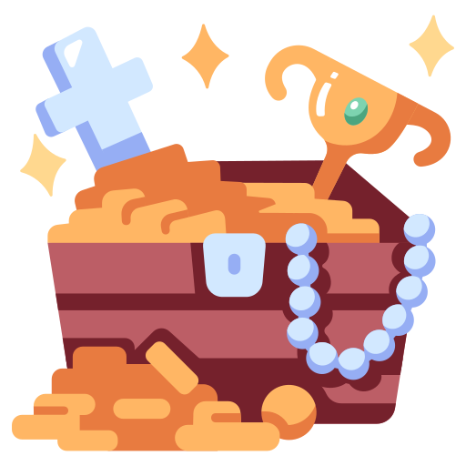

<div class="Pantalla" >
    <div class="container-fluid d-flex flex-column align-items-center justify-content-start" >
        
        <h1>{{informacionCompleta.nombre}}</h1>
        <h2>federicopetre22@gmail.com</h2>
        <h3>Juego: Encuentra el Tesoro</h3>
        <h4>Objetivo del Juego: Encuentra el tesoro oculto entre 10 cartas</h4>
        <div class="cartasYPuntajes">
            <h4>Tipos de cartas y puntajes</h4>
            <table>
                <tr>El barco: Suma 1 punto.</tr>
                <tr>El mapa: Suma 2 puntos.</tr>
                <tr>El tesoro: Suma 10 puntos.</tr>
                <tr>La calavera: Finaliza el juego (Perdiste)</tr>
            </table>
        </div>
        <p>El juego finaliza cuando se encuentra el tesoro o cuando se descubre la calavera.</p>
        <p>Al principio del juego todas las cartas están al reverso. Se hace click en la carta para revelarla</p>
        <p>El puntaje máximo que se puede alcanzar es de 20 puntos</p>
    </div>
</div>
    